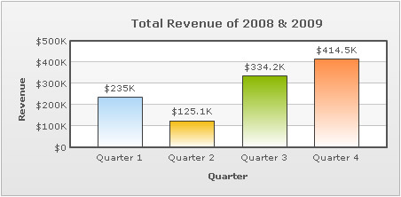
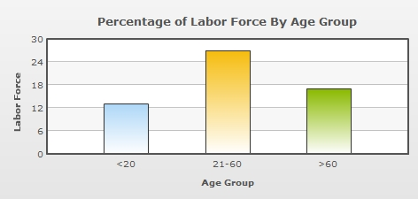
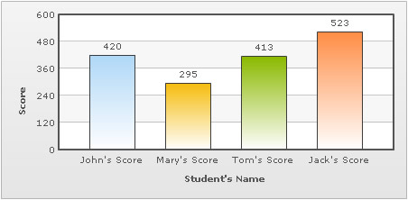
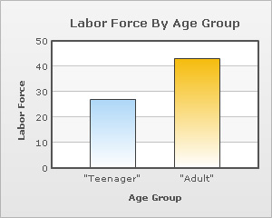
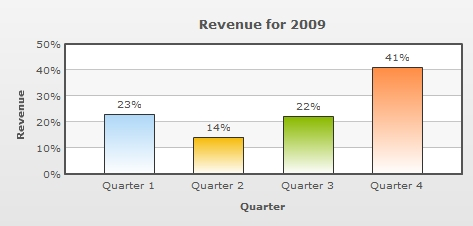

| Using Special Punctuation on Chart |
|
You can directly embed most of the special characters and punctuation marks in the XML/JSON data source of your chart. However, &, <, >, ' (apostrophe) and "(quote) need to be specially encoded when providing the same as a part of the chart data. Apart from this, there is no need to encode any other special character. In the following sections of this page, we will learn how to use special punctuation marks like - &, <, >, ' (apostrophe) and "(quote). |
| Using & sign |
|
To display & character on a chart, you need to use the encoded form of the character - & in your chart data (XML or JSON). It is applicable in both Data URL and Data String methods. Following data includes & character: |
<chart showValues="1" caption="Total Revenue of 2008 & 2009" numberPrefix="$" xAxisName="Quarter" yAxisName="Revenue" > {
|
|
The above data produces a chart with & in its caption, as under:  When using the HTML embedding method with data provided as embedded string, it is essential to encode & character to %26. |
| Using < or > sign |
|
You cannot directly use < and > characters in FusionCharts XT data as these are invalid characters from XML perspective. To use < and >, you first need to convert them into < and >, respectively. It is applicable in both Data URL and Data String methods. Following data includes < and > characters: |
<chart showValues="0" caption="Percentage of Labor Force By Age Group" xAxisName="Age Group" yAxisName="Labor Force"> {
|
|
The above data produces a chart with < and > characters in its data labels:  Typically, text in FusionCharts XT is rendered in normal mode. But, you can also render the text in limited HTML mode too. In case, you need to use HTML text as part of any label, you will need to customize the chart object using Styles and set isHTML property to 1 in Font Styles. Also, you need to double encode the < and > characters in this case, or these will be considered as starting and end brackets of HTML tags. Hence, &lt; should be used instead of < and &gt; should be used instead of >. A sample data is shown as below: <chart showValues="0" caption="Percentage of Labor Force By Age Group" xAxisName="Age Group" yAxisName="Labor Force"> {
"chart":{
"showvalues":"0",
"caption":"Percentage of Labor Force By Age Group",
"xaxisname":"Age Group",
"yaxisname":"Labor Force"
},
"data":[
{ "value":"13", "label":"&lt;20" },
{ "value":"27", "label":"21-60" },
{ "value":"17", "label":"&gt;60" }
],
"styles": {
When using the HTML embedding method with data provided as embedded string, it is essential to encode < and > characters to %26lt; and %26gt; ,respectively. In case, HTML text mode is set on, %26amp;lt; and %26amp;gt; are to be used, respectively. |
| Using Apostrophe(') sign |
|
To display ' (apostrophe) character on a chart, it is recommended to encode it as '. It is applicable in both Data URL and Data String methods. A sample where data includes the ' (apostrophe) character is as shown below: |
<chart showValues="1" xAxisName="Student's Name" yAxisName="Score" > <set label='John's Score' value='420' /> <set label='Mary's Score' value='295' /> <set label='Tom's Score' value='413' /> <set label='Jack's Score' value='523' /> </chart> {
"chart":{
"showvalues":"1",
"xaxisname":"Student's Name",
"yaxisname":"Score"
},
"data":[{
"label":"John's Score",
"value":"420"
},
{
"label":"Mary's Score",
"value":"295"
},
{
"label":"Tom's Score",
"value":"413"
},
{
"label":"Jack's Score",
"value":"523"
}
]
}
|
|
The above data produces a chart with ' (apostrophe) in its data labels:  When using the HTML embedding method with data provided as embedded string, it is essential to encode '(apostrophe) character to %26apos;. |
| Using Quote(") sign |
|
To display the " (double-quotation or quotes) character on a chart, is recommended to encode it as ". It is applicable in both Data URL and Data String methods. The following data shows how quotes are used: |
|
The above data produces a chart as shown below with quotes in data labels:  When using the HTML embedding method with data provided as embedded string, it is essential to encode "(quote) character to %26quot. |
| Using Percent(%) sign |
At times, you might also want to include the % (percent) sign in your chart data. To display % (percent) sign on a chart, you can simply include it in the XML/JSON data source of the chart. It is applicable in both Data URL and Data String methods. Following data includes the % character: |
<chart showValues="1" caption="Revenue for 2009" numberSuffix="%" xAxisName="Quarter" yAxisName="Revenue" > {
|
The above data produces a chart with % suffixed to all numeric values:  Note that while using the HTML embedding method and Data String, it is essential to encode percent character to %25. |